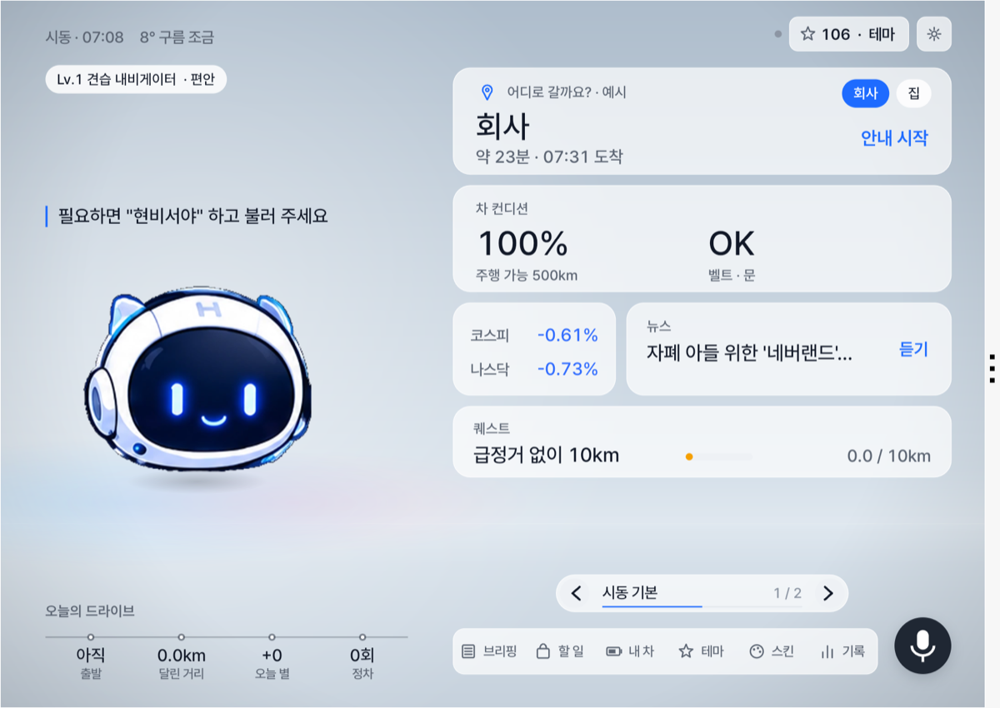
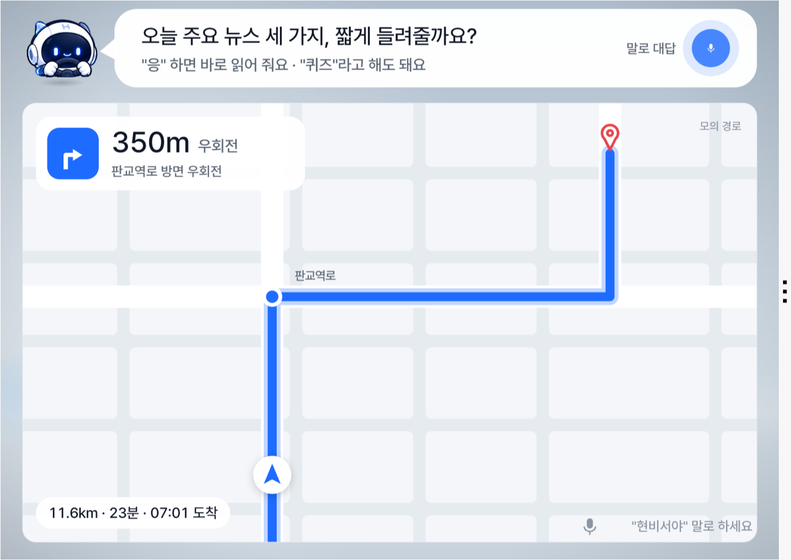
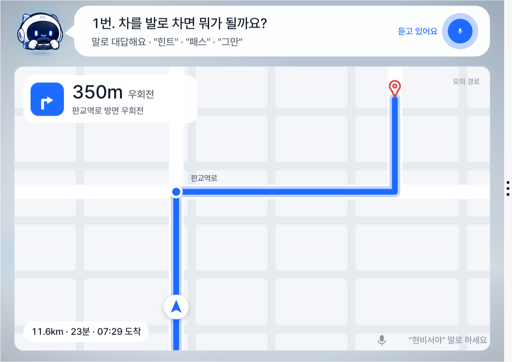
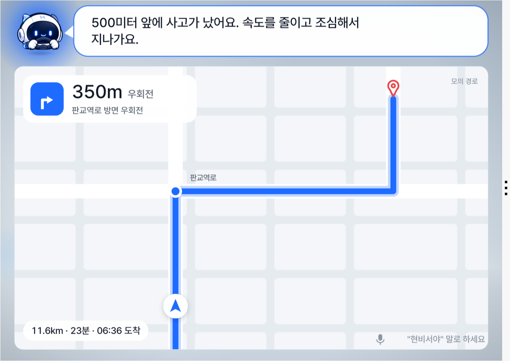
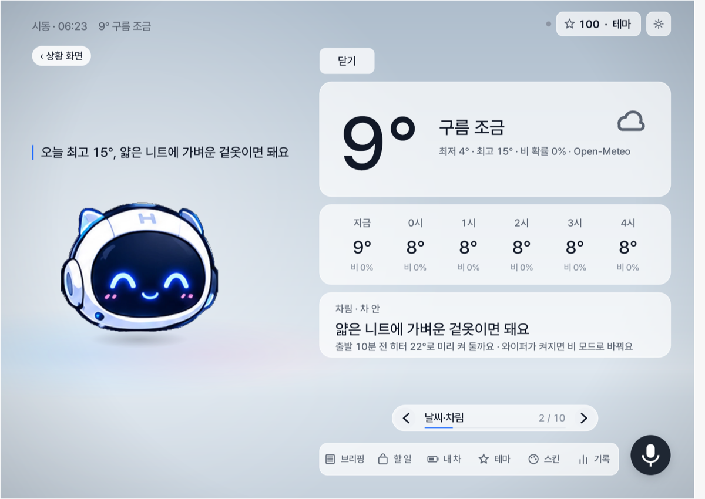
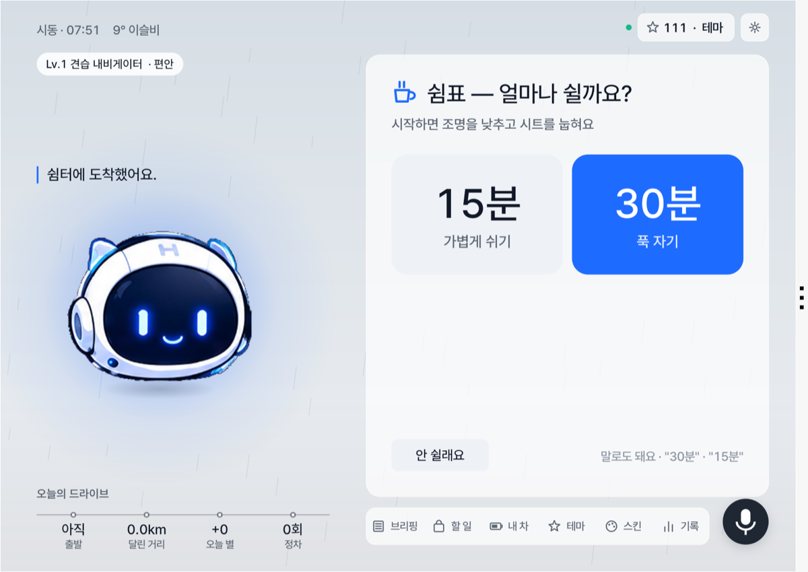
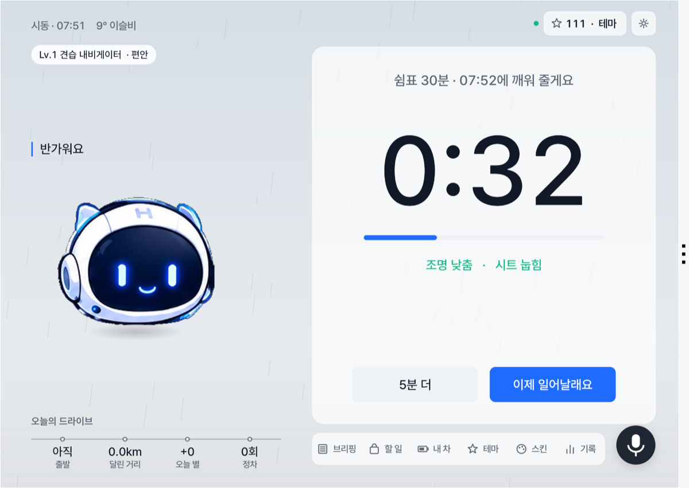
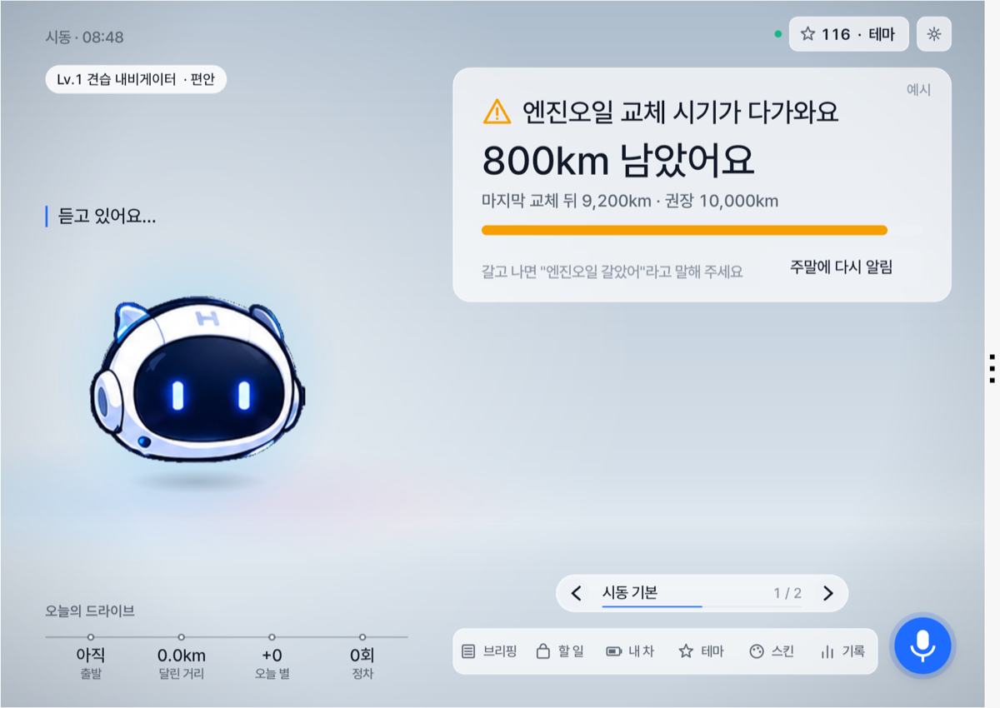
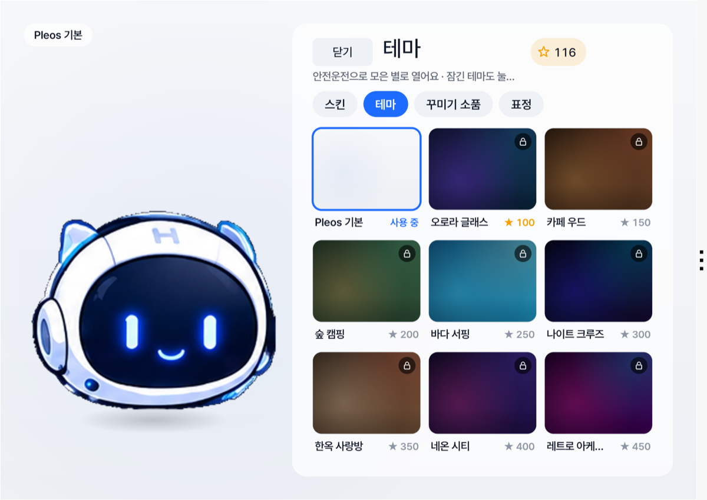

현비서 — 접수양식 「02 앱 프로젝트 소개」 초안
2026-11-14 기준 실제 구현 상태(쉼표 · LLM 대화 · 꾸미기 포함)에 맞춰 다시 쓴 초안입니다. 항목마다 [복사]를 눌러 접수양식(DOCX)의 해당 칸에 붙여 넣으세요.
제출 전에 직접 확인·수정할 곳
- 6번의 예상 MAU는 가정값으로 계산한 예시입니다. 팀이 가진 근거 숫자로 바꿔 주세요.
- 6번 끝의 「LLM 연결과 데이터」는 "운전자 본인 AI 계정 로그인" 방향으로 채웠습니다. 계정 로그인 화면과 동의 화면은 아직 구현 전인 설계입니다.
- 2번의 통계 4건은 2026-11-14에 출처를 다시 확인해 문구를 고쳤습니다(아래 「2번 근거 자료」). J.D. Power 수치는 본사 보도자료 페이지가 열리지 않아 이를 옮긴 매체 기사로 확인했습니다.
- 쉼표의 시트 · 조명 제어는 에뮬레이터에서만 확인했습니다. 실차 적용은 현대차의 권한 승인이 전제입니다(5번에 적어 둠).
- 7번의 GitHub 저장소는 지금 비공개입니다. 심사위원이 볼 수 있게 할 방법(공개 전환 또는 초대)을 정해야 합니다.
- 02 장에는 이름·연락처·소속을 쓰지 않습니다(양식 안내).
2번 근거 자료 (2026-11-14 확인)
기획서 본문에는 기관·조사 이름만 쓰고, 링크는 발표 질의응답용으로 보관하세요.
• 졸음 · 주시태만 71.5% — 한국도로공사 발표를 전한 노컷뉴스 기사: "최근 3년간 고속도로 교통사고 사망 사고 중 71.5%가 졸음·주시태만이 원인" https://www.nocutnews.co.kr/news/6460123 ※ '사망자'가 아니라 '사망사고' 기준입니다. 같은 기관의 2026년 상반기 자료는 71.6%로 따로 있습니다. • 2시간 운전 · 15분 휴식 — 사업용 차량 의무(서울신문), 도로공사의 일반 운전자 권고와 휴식포인트 제도(데일리안) https://m.seoul.co.kr/news/2022/09/27/20220927009005 https://www.dailian.co.kr/news/view/1671846/ ※ 처음 초안의 "도로교통공단 권고"는 출처를 찾지 못해 "사업용 차량 의무 + 한국도로공사 권고"로 고쳤습니다. 도로공사 권고 시간은 보도에 따라 15분 또는 15~20분입니다. • J.D. Power 2025 미국 초기품질조사 — 인포테인먼트 100대당 42.6건(최다), 업계 평균 192건 https://www.automotiveworld.com/news/fewer-physical-vehicle-controls-and-more-problematic-touchscreen-make-infotainment-system-a-modern-catch-all-drawer-j-d-power-finds/ https://www.jdpower.com/business/press-releases/2025-us-initial-quality-study-iqs ※ J.D. Power 본사 페이지는 자동 조회가 막혀 직접 열어 보지 못했습니다. 42.6은 보도자료를 옮긴 매체 기사들에서 확인했습니다. 미국 시장 조사입니다. • "에어컨 높여줘, 더워" — ZDNet Korea 「[타보고서] 플레오스 품은 그랜저…미래는 봤지만 사용성은 숙제」 https://zdnet.co.kr/view/?no=20260529223051 ※ 다른 매체 시승기에는 "덥다" 한마디로 에어컨이 켜졌다는 기록도 있어, 표현과 상황에 따라 결과가 달랐던 것으로 보입니다.
화면 캡처 (Pleos Connect 에뮬레이터 v2.1.0)
7번 참고자료에 붙일 수 있는 실제 동작 화면입니다. 파일은 이 폴더의 img/ 에 있습니다.








